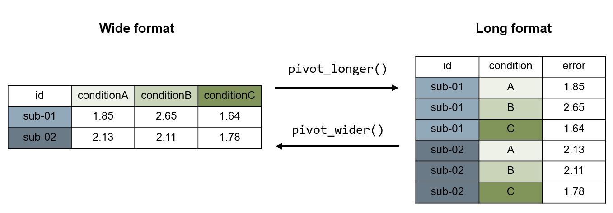

# download tidyverse package (only do this once)
# install.packages("tidyverse")
# load library (run this at the beginning of your script)
library("tidyverse") 3 Data wrangling using the tidyverse
The tidyverse is a collection of R packages designed for data science. More information on the tidyverse can be found here.
The tidyverse collection can be downloaded and loaded directly in R:
Functions of the tidyverse allow you to perform data wrangling easily.
Examples
For every function we give an example. It is best, when you use your own data set for the examples. Or you can load load the example data set as explained in the last chapter.
d <- read.csv("data/DatasaurusDozen.csv")
glimpse(d)Rows: 1,846
Columns: 4
$ id <int> 1, 2, 3, 4, 5, 6, 7, 8, 9, 10, 11, 12, 13, 14, 15, 16, 17, 1…
$ condition <chr> "away", "away", "away", "away", "away", "away", "away", "awa…
$ x <dbl> 32.33111, 53.42146, 63.92020, 70.28951, 34.11883, 67.67072, …
$ y <dbl> 61.411101, 26.186880, 30.832194, 82.533649, 45.734551, 37.11…3.1 Using the pipe |>
With the pipe you can perform several data wrangling steps at once without creating new data sets.
Instead of this …
d <- read.csv("data/DatasaurusDozen.csv")
d1 <- filter(d, condition %in% c("away", "bullseye", "circle", "dino", "dots, star"))… we perform several data wrangling steps (read in data and filter out some observations) in “one” step with the pipe operator:
d <- read.csv("data/DatasaurusDozen.csv") |>
filter(condition %in% c("away", "bullseye", "circle", "dino", "dots, star"))More information on pipes including in which cases they are not helpful can be found here.
3.2 Change the data format from long to wide and vice versa
Data can be formatted differently. It is always important to know:
What data format does your data set have?
What data format does your analysis pipeline require?
Long format
every assessed/measured variable has one column (e.g. subject id, age, IQ score, response time, response button, …)
each measure has one row
if one variable has several measures (e.g.
rtoraccuracy) but the other variable has only few/one (e.g. thesub-id), the values of the second are repeated
Data visualization and analysis is often easier in this format. If your data is in wide format it is necessary to create a new data frame in long format for the further data wrangling in this course.
Wide format
each measurement has one column
each entity (e.g. person) has one column
This data format makes it easy to spot missing values or outliers and count how many observations you have.

Questions
In our example data set we have 4 columns (id, condition, x, y) and 1846 rows. What format is this?
What data format does your own data set have?
glimpse(d)Rows: 568
Columns: 4
$ id <int> 1, 2, 3, 4, 5, 6, 7, 8, 9, 10, 11, 12, 13, 14, 15, 16, 17, 1…
$ condition <chr> "away", "away", "away", "away", "away", "away", "away", "awa…
$ x <dbl> 32.33111, 53.42146, 63.92020, 70.28951, 34.11883, 67.67072, …
$ y <dbl> 61.411101, 26.186880, 30.832194, 82.533649, 45.734551, 37.11…3.2.1 pivot_wider()
With pivot_wider(data, id_cols = , names_from = , values_from = , ...) you can transform your data from long to wide format.
Example
d_wide <- d |> pivot_wider(id_cols = id, names_from = condition, names_glue = "{condition}_{.value}", values_from = c(x, y))
glimpse(d_wide)Rows: 142
Columns: 9
$ id <int> 1, 2, 3, 4, 5, 6, 7, 8, 9, 10, 11, 12, 13, 14, 15, 16, 17, …
$ away_x <dbl> 32.33111, 53.42146, 63.92020, 70.28951, 34.11883, 67.67072,…
$ bullseye_x <dbl> 51.20389, 58.97447, 51.87207, 48.17993, 41.68320, 37.89042,…
$ circle_x <dbl> 55.99303, 50.03225, 51.28846, 51.17054, 44.37791, 45.01027,…
$ dino_x <dbl> 55.3846, 51.5385, 46.1538, 42.8205, 40.7692, 38.7179, 35.64…
$ away_y <dbl> 61.411101, 26.186880, 30.832194, 82.533649, 45.734551, 37.1…
$ bullseye_y <dbl> 83.33978, 85.49982, 85.82974, 85.04512, 84.01794, 82.56749,…
$ circle_y <dbl> 79.27726, 79.01307, 82.43594, 79.16529, 78.16463, 77.88086,…
$ dino_y <dbl> 97.1795, 96.0256, 94.4872, 91.4103, 88.3333, 84.8718, 79.87…3.2.2 pivot_longer()
With pivot_longer(data, cols = , names_to = , ...) you can transform your data from wide to long format.
With cols you specify the columns of the wide dataframe you want to bring into long format. With names_to you specify how the new variables (colums) are named (enter them with "). With names_sepyou can specify, if two variables should be extracted from the existing column.
Example
d_long <- d_wide |> pivot_longer(cols = away_x:dino_y, names_to = c("condition", "measure"), names_sep = "_")
glimpse(d_long)Rows: 1,136
Columns: 4
$ id <int> 1, 1, 1, 1, 1, 1, 1, 1, 2, 2, 2, 2, 2, 2, 2, 2, 3, 3, 3, 3, …
$ condition <chr> "away", "bullseye", "circle", "dino", "away", "bullseye", "c…
$ measure <chr> "x", "x", "x", "x", "y", "y", "y", "y", "x", "x", "x", "x", …
$ value <dbl> 32.33111, 51.20389, 55.99303, 55.38460, 61.41110, 83.33978, …
Rule of thumb
Variables/factors should have a column (e.g. the variables you want to enter in your model formula).
Factor levels (e.g. condition levels such as
away) should be coded within rows.
3.3 Choose variables in data sets
If you want to use only some variables or observations you can use select() and filter():
3.3.1 select()
With select(.data, variablename, ...) you can choose variables you want to keep. This is helpful if you have large data files and not all variables are used for the analysis. You can also delete variables from the dataset (e.g. for anonymization) with ! in front of the variable name.
Example
If we for example only need variables condition and x we can create a new more simple data set:
# only keep variables condition and x without using a pipe
d_simpler <- select(d, condition, x)
# only keep variables condition and x using a pipe
d_simpler <- d |> select(condition, x)
# keep all variable except x
d_simpler <- d |> select(!x)3.3.2 filter()
With filter(.data, filter, ...) you can choose observations you want to keep or delete from the data set. For this you have to specify your filter.
Example
# only keep observations where dataset is "star"
d_filtered <- filter(d, condition == "star")
# or with the pipe
d_filtered <- d |> filter(condition == "star")
# only keep observations where dataset is NOT "star"
d_filtered <- d |> filter(condition != "star")
# only keep observations where x is more than 50 (e.g. for filtering response times)
d_filtered <- d |> filter(x > 50)
# only keep observations where x is more than 50 (e.g. for filtering response times)
d_filtered <- d |> filter(x > 50 & x < 60)
# use several filters
d_filtered <- d |>
filter(condition == "star") |>
filter(x < 50)3.4 Create and manipulate variables
Here we look at functions with which we can generate new variables and/or alter existing ones.
3.4.1 mutate()
The mutate(.data, …) function is used to generate or alter variables in a data frame using the pipe.
Example
# generate new variables
d_altered <- d |>
mutate(num_variable = 1.434,
chr_variable = "1.434",
sumofxy_variable = x + y,
copy_variable = condition)
# alter exisiting variables
d_altered <- d_altered |>
mutate(num_variable = num_variable * 1000) # e.g. to change seconds to milliseconds3.4.2 case_when()
If we want to generate variables conditioned on existing data we can use case_when().
d_condvariables <- d |>
mutate(cond_variable = case_when(x > 50 ~ "higher",
x <= 50 ~ "lower",
.default = NA))3.4.3 as.factor(), as.numeric(), …
For changing the variable class we can use these functions. It makes sense to adjust variable classes at the beginning of the data pipeline, as it will make a difference for plots as well as models if a variable is entered categorical or numerical. Subject IDs for example are often numerical values but are actually categorical.
# change to factor (categorical/nominal)
d <- d |>
mutate(id = as.factor(id))3.5 Group and summarise data
3.5.1 group_by() and summarise()
With these functions you can group a data frame by factor levels and calculate mean scores or else.
# look at each individual
d |> group_by(id) |>
summarise(mean_x = mean(x),
mean_y = mean(y))# A tibble: 142 × 3
id mean_x mean_y
<fct> <dbl> <dbl>
1 1 48.7 80.3
2 2 53.5 71.7
3 3 53.3 73.4
4 4 53.1 84.5
5 5 40.2 74.1
6 6 47.3 70.6
7 7 44.3 84.2
8 8 44.6 65.6
9 9 43.2 78.0
10 10 38.9 61.7
# ℹ 132 more rows# look at each individual in each condition
d_summary <- d |> group_by(id, condition) |>
summarise(mean_x = mean(x),
sd_x = sd(x),
mean_y = mean(y),
sd_y = sd(x))`summarise()` has grouped output by 'id'. You can override using the `.groups`
argument.glimpse(d_summary)Rows: 568
Columns: 6
Groups: id [142]
$ id <fct> 1, 1, 1, 1, 2, 2, 2, 2, 3, 3, 3, 3, 4, 4, 4, 4, 5, 5, 5, 5, …
$ condition <chr> "away", "bullseye", "circle", "dino", "away", "bullseye", "c…
$ mean_x <dbl> 32.33111, 51.20389, 55.99303, 55.38460, 53.42146, 58.97447, …
$ sd_x <dbl> NA, NA, NA, NA, NA, NA, NA, NA, NA, NA, NA, NA, NA, NA, NA, …
$ mean_y <dbl> 61.41110, 83.33978, 79.27726, 97.17950, 26.18688, 85.49982, …
$ sd_y <dbl> NA, NA, NA, NA, NA, NA, NA, NA, NA, NA, NA, NA, NA, NA, NA, …